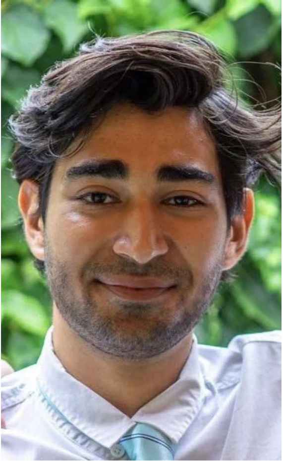

About / Curriculum vitae
A designer’s curiosity.
An engineer’s approach.

Dirk Lagemaat
Product design engineer · Rotterdam
I am an MSc Integrated Product Design graduate from TU Delft. I combine human-centred research with hands-on engineering to develop products, services and systems.
I look beyond the immediate brief to understand the wider problem. My interests extend from CAD modelling and physical prototyping to application development, entrepreneurship and innovation strategy. Understanding how something can be produced or programmed is an essential part of my design practice.
Download CVEducation
MSc Integrated Product Design
Delft University of Technology
BSc Industrial Design Engineering
Delft University of Technology
Experience
Expert panel member
EpilepsieNL
Evaluating scientific epilepsy research proposals for future funding.
Expert panel member
BRAINS / Hersenstichting
Evaluating proposals concerning the blood-brain barrier, neurotechnology and human-relevant brain models.
Application developer
Epilepsy research
Developing and maintaining a wearable-connected application for a study planned by SEIN and EpilepsieNL from January 2027.
Landscape management
Blooming Buildings
Managing the ecological environment of Rotterdam’s Groothandelsgebouw.
Sales associate
Young Talent House
Connecting companies with student talent and developing commercial and stakeholder communication skills.
Capabilities
Design & engineering
Human-centred research · Systems thinking · CAD modelling · Prototyping · Product development · Multidisciplinary collaboration
Tools & development
Rhino · SolidWorks · Fusion 360 · Blender · Python · SwiftUI · Figma · Adobe Creative Cloud · SPSS · Cura · Raspberry Pi
Languages
Dutch · English · German · French